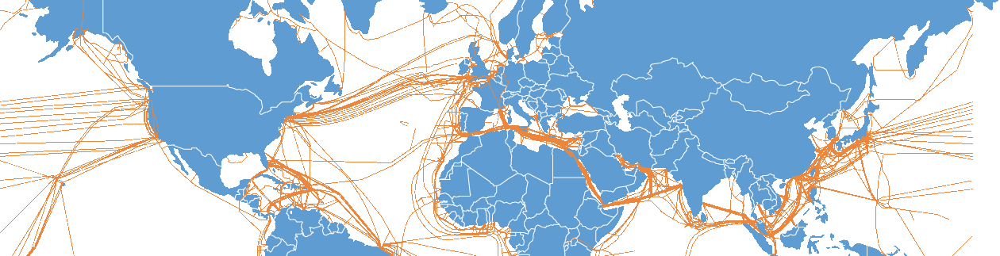

Networking theory seminar
Past talks
- 13.07.2020 Wenkai Dai on Deterministic Paging
- 12.10.2020 Mahmoud Parham on Work Function algorithm for k-server
- 02.11.2020 Wenkai Dai on Online Scheduling for Related Machines
Topics from online algorithms
The Book:
Online Computation and Competitive Analysis
Allan Borodin, Ran El-Yaniv, Cambridge University Press 1998
Topics from online algorithms:
-
Caching: deterministic upper and lower bounds, and randomized upper bound
(phase-based analysis)
Competitive paging algorithms.
A. Fiat, R. Karp, M. Luby, L. McGeoch, D. Sleator, N. Young
Journal of Algorithms, 1991.
Possibly the best source is: sections 1.2 and 2.2 from BRICS lecture notes.
Also described in various other sources, e.g. chapters 3 and 4 from Online Computation and Competitive Analysis.
-
Scheduling for identical and related machines.
(doubling technique)
As a short warm-up,
Section 12.2.1 from Online Computation and Competitive Analysis.
The main part is section 3.2 from
On-Line Routing of
Virtual Circuits with Applications to Load Balancing and Machine Scheduling.
J. Aspnes, Y. Azar, A. Fiat, S. Plotkin, O. Waarts.
J. ACM, 1997
Also described in chapters 12.2.3 from Online Computation and Competitive Analysis.
Identical machines described in chapter 8 from BRICS lecture notes.
-
List update: deterministic and randomized algorithms
(potential function technique)
Section 2 from
Amortized efficiency of list update and
paging rules.
D. Sleator, R. Tarjan
Communications of the ACM, 1985
Section 3.1 (only algorithm BIT) from
Randomized competitive algorithms for the list update problem
N. Reingold, J. Westbrook, D. Sleator
Algorithmica, 1994
Analysis of combination of BIT and TIMESTAMP from
A combined BIT and TIMESTAMP algorithm for the list
update problem
S. Albers, B. von Stengel, R. Werchner
Information Processing Letters, 1995
Chapters 1 and 2 from Online Computation and Competitive
Analysis.
Chapter 5 from BRICS lecture notes.
-
Online Set Cover via Primal-Dual approach
Sections 3, 4, 5.1 from Online primal–dual algorithms for covering and packing problems.
N. Buchbinder, J. Naor
ESA 2005
Chapter 4, sections: 4.1, 4.2 (only Algorithm 1), 4.3 and 4.4.1 from the book The Design of Competitive
Online Algorithms via a Primal–Dual Approach, Niv Buchbinder and Joseph Naor
-
(half of a seminar)
Searching for a point on a line.
Section 2 from Searching in The Plane
R. Baeza-Yates, J. Culberson, G. Rawlins
Information and Computation, 1993
Chapter 9 from BRICS lecture notes.
-
(half of a seminar)
k-server for trees.
Section 3 from An Optimal On-line Algorithm for k Servers on Trees
M. Chrobak , L. Larmore
SIAM Journal on Computing, 1996
Section 3.2 from The k-server problem
E. Koutsoupias
Computer Science Review, 2009
Also described in chapter 10.4 from
Online Computation and Competitive Analysis.
-
Online matching
AdWords and generalized online matching
A. Mehta, A. Saberi, U. Vazirani, V. Vazirani
Journal of ACM 2008
Other classic topics from online algorithms (under construction)
- Work function for MTS
- Online Knapsack Cygan Jez
- Online Bin Packing
- File migration
- Virtual circuit routing and call admission
- High-throughput routing
- TCP acknowledgement
-
Nikhil Bansal, Bouke Cloostermans: Minimizing Maximum Flow-Time on Related Machines, APPROX 2015
-
Network design, online (under construction)
- survey on expanders
- Shannon's mathematical theory of computation
- Impossibility results in distributed computing
- BGP fractional SODA 08
- Virtual input-output queues
- Flows, Min cut max flow theorem
- Famous network topologies such as Butterfly
- Shared objects: Arrow, Ivy algorithm
- Valiant routing
-
HST.
Y Bartal: Probabilistic approximation of metric spaces and its algorithmic applications FOCS’96
Y Bartal: On approximating arbitrary metrices by tree metrics, FOCS’98
J Fakcharoenphol, S Rao, K Talwar: A tight bound on approximating arbitrary metrics by tree metric, JCSS’04
- D.P. Williamson, D.B. Shmoys "The design of Approximation Algorithms": chapter 9.3 Minimum-degree spanning tree
- Steiner tree
- Facility location
-
Oblivious routing
- Adaptive routing
- Max flow via electrical flows